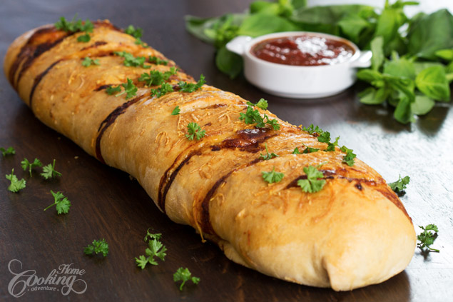

Chicken Stromboli

Stromboli is somehow similar to a calzone, a pizza or bread dough rolled over various fillings and baked. It is usually shaped in a long cylinder.
This Chicken Stromboli is a delicious dish you can prepare whenever you have leftover chicken or turkey and it makes a great lunch or appetizer. If you are in a hurry you can even use store-bought dough and pizza sauce, but making the dough and the tomato sauce from scratch, whenever this is possible, improves the quality of this recipe.
The dough recipe is the one I’ve used in homemade pizza recipe and I’ve also used the homemade tomato sauce to combine with the cooked chicken.
Stromboli is best served a bit warm with your favorite dipping sauce.
Prep time=30 mins + rising time || Cook time=30 mins || Total time=1 hr + rising time
Ingredients
Makes about 10 servings
Pizza Dough
3 cups (375g) bread flour
1 tsp (5g) salt
10g fresh yeast (or 1 tsp active dry yeast)
1 tsp (5g) sugar
2 tbsp (28ml) olive oil
1 cup (240ml) warm water
Filling
2 cups (300g) chicken, cooked and shredded
1/2 cup (120g) pizza sauce
1 cup (100g) Mozzarella cheese
1/2 cup (50g) Parmesan Cheese
Basil leaves
Topping
1 egg, beaten
Parmesan Cheese, grated
Directions
Prepare the dough. Stir yeast with sugar until it liquefies. Dissolve in about ¼ cup (60 ml) warm water. In a large bowl mix flour with salt. Add dissolved yeast, oil and gradually ¾ cup warm water. Mix everything together then knead until smooth and pulls away from the sides of the bowl. Place the dough in an oiled bowl, cover with plastic wrap and let it sit for at least 2 hours at room temperature, to let the dough rise until doubled in size. Preheat oven to 400F (200C). Line a baking sheet with parchment paper. Onto a floured surface turn the dough and roll into a 12x16 inch (30x40cm) rectangle. Add mozzarella in a row in the center or edge. In a bowl combine shredded chicken with tomato pizza sauce and spread over the mozzarella. Top with Parmesan cheese and basil leaves. Fold the dough over the filling and roll, seal the edges on all sides. Place it seam side down on the prepared baking sheet. Brush with beaten egg, sprinkle Parmesan cheese and cut slices on top to let the steam escape. Bake for about 30 minutes or until golden brown. Let it cool for about 10 minutes before serving.
Nutrition facts
1 Serving ( 125g) - Calories:249, Fat:6g, Saturated Fat:1.8g, Unsaturated Fat:0.0g, Carbohydrates: 32.3g, Sugar:0.9g , Fiber:2.1g, Protein:16.3g , Cholesterol:27mg, Sodium 369mg, Potassium 173mgVitamin A 1%, Vitamin C 2%, Calcium 7%, Iron 16%, daily percent values are based on a 2,000 calorie diet